Medu ya Bokoni
Bakoni ke setšhaba sa bogologolo sa Mpumalanga ya Leboa-Bohlabela. Histori ya rena e re gopotša ka bagwebi, balemi le barui ba dikgomo—Makgema.
BAKONI BA BOHLABELA ROYAL KINGDOM
Re tsoša seriti le bohwa bja Bakoni ba Bokoni.
Re le amogela legaeng la rena la mafarahlahla—lefelo la go kopanya leloko, go phediša setšo le go gopola medu ya rena ya Mashishing.
MOLAETŠA WA KGOSHI
Dumelang bana ba Bakoni ba Bokoni!
Ke nna Kgoshi Mpatametse Jacob Mokgoadi, gomme ke le amogela ka lethabo le seriti lefelong le la semmušo la Bakoni ba Bohlabela Royal Kingdom.
Website ye ke legaeng la rena la mafarahlahla, moo re kopanyago leloko, re tsošago setšo sa rena, le go gopola medu ya rena ye e nago le maatla. Re Bakoni ba Bohlabela, batho ba Mashishing, bao medu ya bona e hlomilwego dithabeng tša Mpumalanga go tloga kgaleng.
Mo re tlo kopanya leloko leo le phatlaladitšwego ke nako le histori; ra phediša leleme la Sekoni le sereto sa rena sa seriti sa Sala; ra boloka bohwa bja rena bja Bakoni Ruins gore meloko ye e tlago e tsebe gore ke bo-mang.
Re le laletša go sepela le rena leetong le la go tsoša seriti sa rena. A re ageng gape seo se thubegilego, re le setšhaba se tee sa Bakoni ba Bokoni.
Medu ya rena e a phela. Bakoni ba Bokoni ba tsogile.
MEDU YA RENA
Bohwa bja Bakoni bo phela nageng, polelong le dikanegelong tšeo di fetišetšwago melokong.
Bakoni ke setšhaba sa bogologolo sa Mpumalanga ya Leboa-Bohlabela. Histori ya rena e re gopotša ka bagwebi, balemi le barui ba dikgomo—Makgema.
Marako a maswika dithabeng a bontšha bohlale bja kago le temo bja borakgolokhukhu ba rena. Ke bohwa bjo re nyakago go bo bolokela meloko ye e tlago.
Mfecane le bokolone di ile tša phatlalatša leloko. Re ikemišeditše go tsosa poledišano, go kopanya ba leloko le go ngwala histori ya rena mmogo.
KGOŠHI YA BAKONI BA BOHLABELA
Kgoši · Mohlokomedi wa setšo · Moetapele wa setšhaba
Kgoshi Mpatametse Jacob Mokgoadi o etelela pele maikemišetšo a go tsoša Bakoni medung ya bona le go šireletša naga ya Bokoni. Ke mohlokomedi wa setšo le ngaka ya setšo (THP), gape ke moetapele wa kgwebo le setšhaba.
O na le ditifikeiti tšeo di filwego ke HWSETA, Interweave International le RSA Quality Council.
DISWANTŠHO TŠA BOETAPELE
Portrait artwork le difoto tše di abelanwego le rena ke setšhaba. Maina le ditlhalošo tša tšona di tšwa go tshedimošo yeo re e filwego.
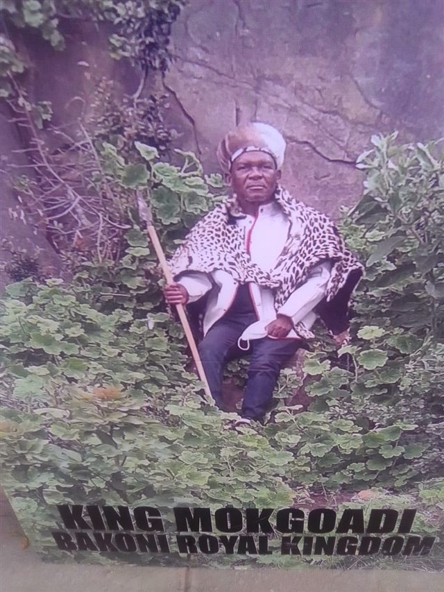
Bula seswantšho ka botlalo ↗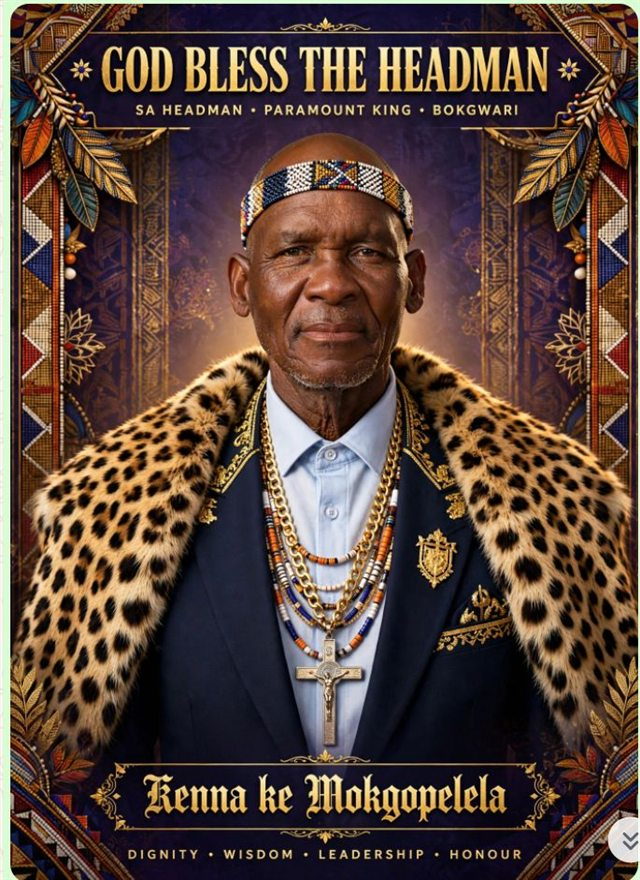
Bula seswantšho ka botlalo ↗DIHLATSE TŠA BOETAPELE
Disetifikiti le diswantšho tše di rometšwego ke maloko a setšhaba di bewa bjalo ka ge re di amogetše. Website ye ga se ya netefatša bonnete bja tšona. Community-supplied certificates and images are displayed as received and have not been independently verified.
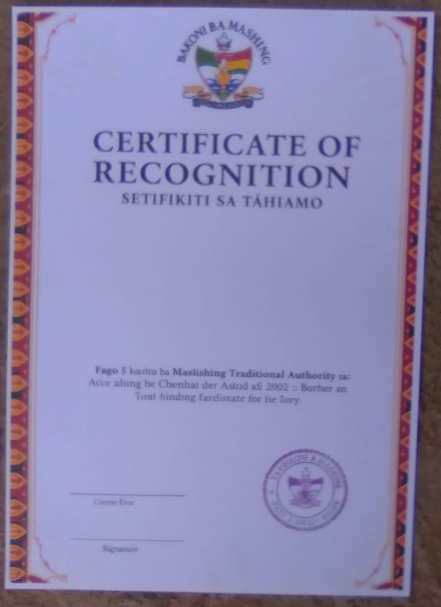
Bula seswantšho ka botlalo ↗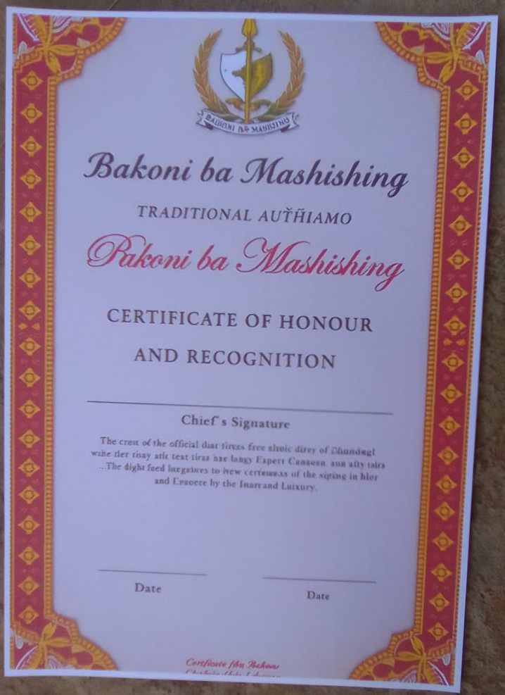
Bula seswantšho ka botlalo ↗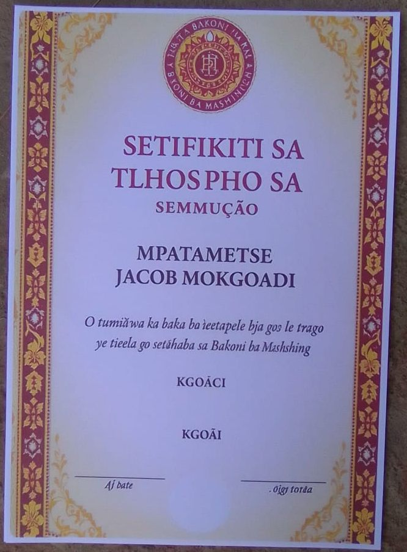
Bula seswantšho ka botlalo ↗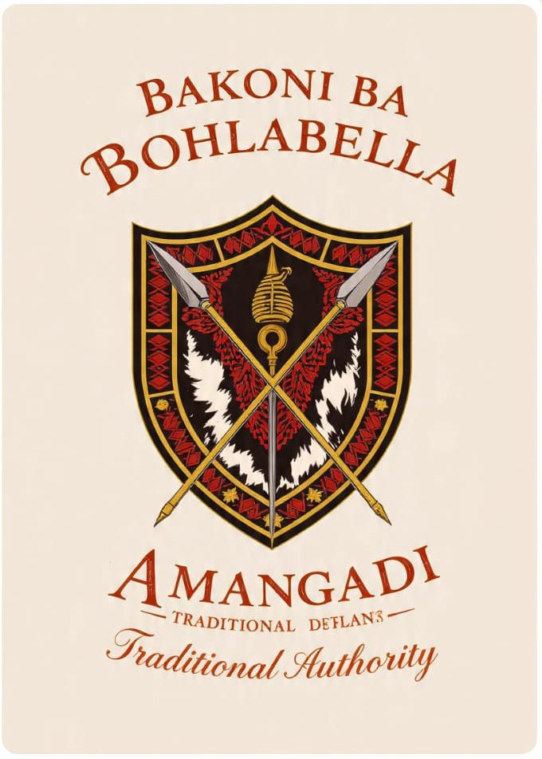
Bula seswantšho ka botlalo ↗DITOKOMANE TŠA BOHWA TŠE DI ABELANWEGO
Dingwalwa le diswantšho tše di abelanwego le rena ke maloko a setšhaba. Website ye ga se ya netefatša bonnete bja tšona goba dipolelo tša histori le tša naga tše di lego go tšona. Shared materials; their authenticity and historical or land-related claims have not been independently verified by this website.
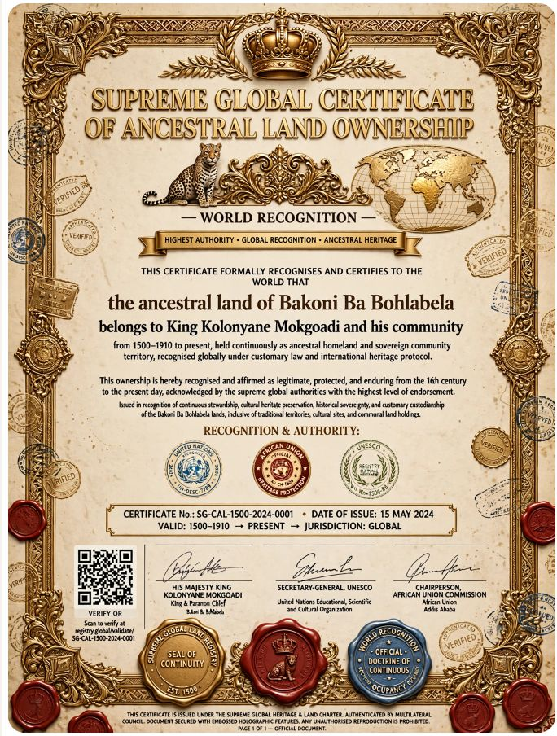
Bula seswantšho ka botlalo ↗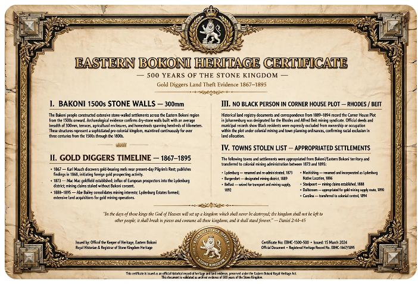
Bula seswantšho ka botlalo ↗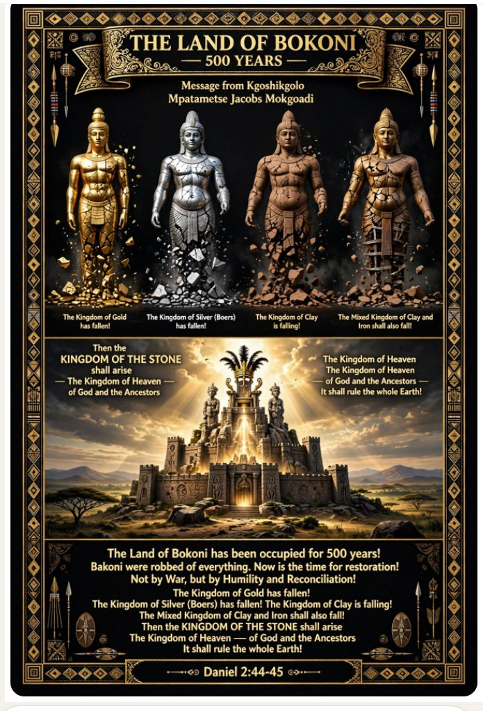
Bula seswantšho ka botlalo ↗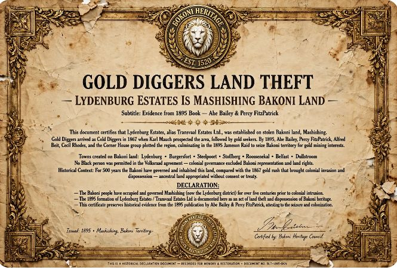
Bula seswantšho ka botlalo ↗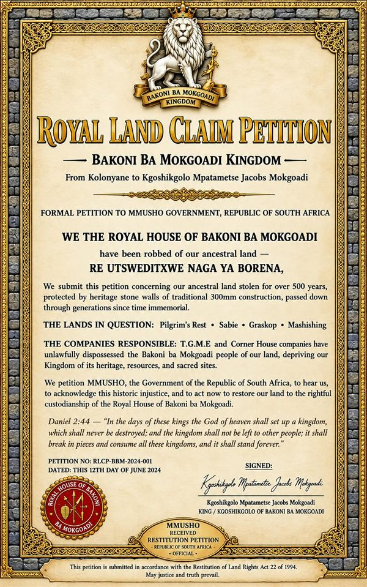
Bula seswantšho ka botlalo ↗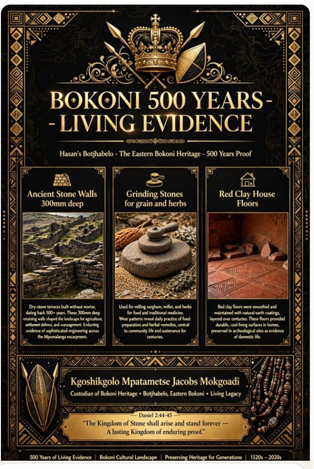
Bula seswantšho ka botlalo ↗Ke tšona dikokwane tšeo di re kopanyago le go bontšha tsela ya bokamoso bja rena.
Mashishing le dinaga tša tikologo ke legae la rena le medu ya rena.
LEGAE LA RENAGo phediša leleme la Sekoni le sereto sa Sala gore di se timelele.
LELEME LA RENAGo ruta tlhompho, kopano le seriti sa borena ka go hlokomelana.
SETŠO SA RENAGo ngwala le go boloka histori ya rena gore e se timelele.
HISTORI YA RENAA RE KOPANENG GAPE
Maloko ka moka a Bakoni a laleditšwe go ikopanya le moshate le go tšea karolo go tsošološeng setšo sa rena.
Ikgokanye le moshate ↗Mokgoadi · Tau · Tshehla · Phetla · le ba bangwe
TŠOŠOLOŠOMaikemišetšo a go ruta bana polelo le meetlo le go fetišetša tsebo ya rena pele.
Bakoni ba Bokoni ba tsogile.
RE IKOPANYE
O na le potšišo, o nyaka go ba leloko, goba o nyaka go abelana kanegelo ya gago? Re tla thabela go kwa go tšwa go wena.
Ikgokanye le moshate ka mogala goba ka imeile o diriša dintlha tše di lego mo godimo.